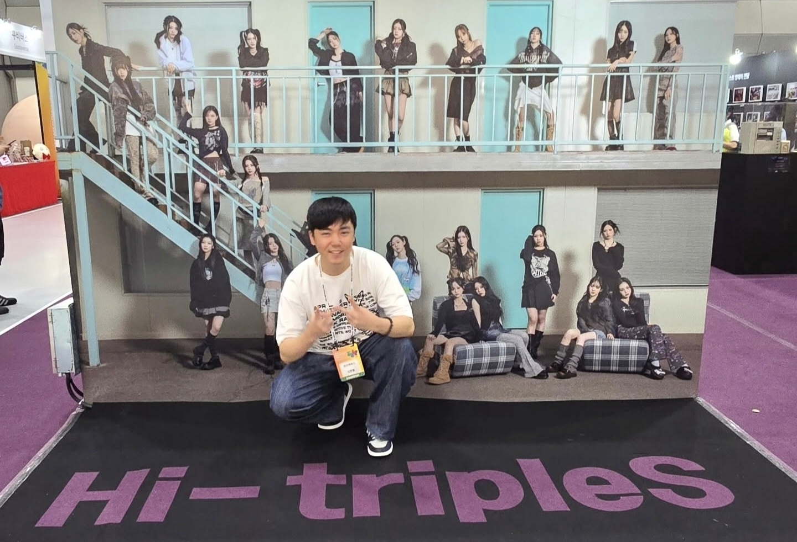

Welcome to my academic homepage! I am a data analyst specializing in entertainment field. My work focuses on user behavior analysis and service optimization. I am currently a B.S. at Yonsei University, Seoul. My goal is to utilize data to provide users with a better service experience and new forms of entertainment, especially in K-POP and professional sports field.
